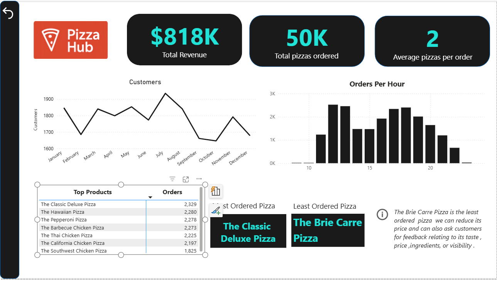
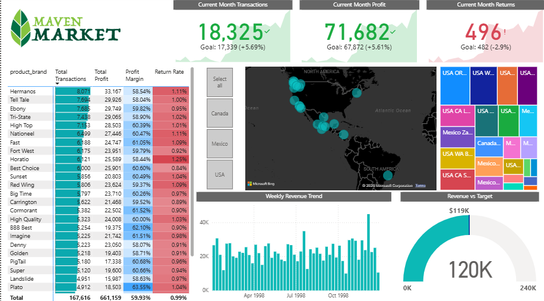

Focused on solving business problems through structured thinking and analysis.
A commerce graduate with a strong interest in business problem-solving, I focus on understanding the core objective before applying tools or methods.
I begin by understanding what the actual goal is — whether it’s improving performance, reducing inefficiencies, or supporting better decisions. Clear objectives lead to better outcomes.
I break complex problems into smaller, manageable parts. This helps identify what information is required and where attention should be focused.
I review available data, reports, or inputs to understand patterns, gaps, and trends that support the objective.
I focus on presenting findings in a clear and structured way so that insights are easy to understand and useful for decision-making.

Developed a Power BI dashboard to analyze revenue, order trends, peak hours, and top-selling pizza categories.

Built an interactive Power BI dashboard analyzing sales, profit, returns, and regional performance across multiple countries.
Coming from a commerce background, I have always been comfortable working with numbers. Over time, I became increasingly curious about how businesses use data not just for reporting, but for making strategic decisions.
This curiosity led me to explore Excel more deeply, and eventually Power BI. As I started building dashboards and analyzing datasets, I realized how powerful data visualization can be when it tells a clear story.
I am still at the beginning of my professional journey, but I am continuously learning, improving my analytical thinking, and working on projects that strengthen my practical understanding of data analytics.
Email: harshitpandey200409@gmail.com
GitHub: https://github.com/Harshit-Pandey-1709